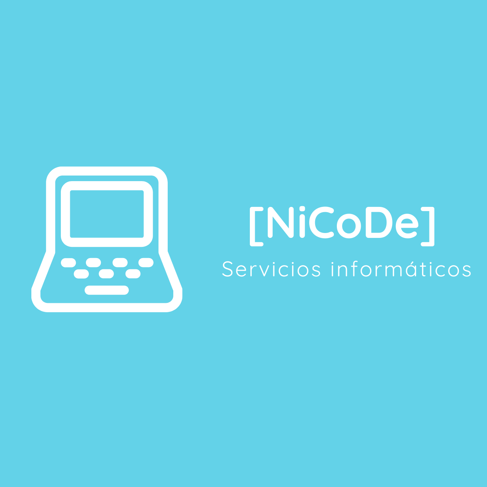
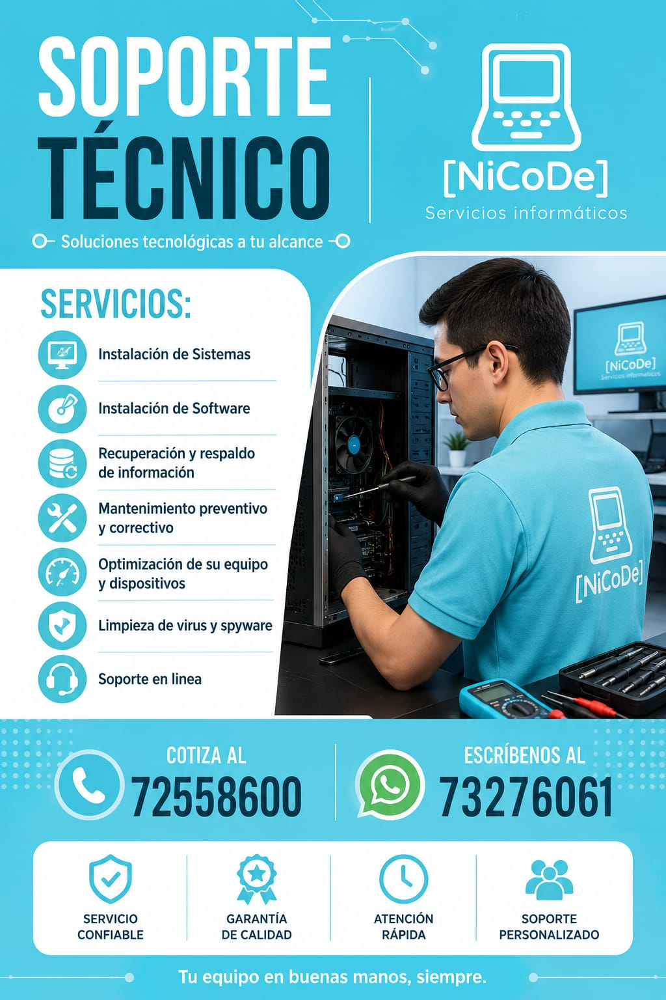

TECNOLOGÍA • SOPORTE • CONFIANZA
Soluciones informáticas para tu negocio
Infraestructura tecnológica confiable, segura y siempre disponible. Ofrecemos asistencia técnica profesional para proteger, optimizar y potenciar tus equipos, redes y sistemas.

TECNOLOGÍA • SOPORTE • CONFIANZA
Infraestructura tecnológica confiable, segura y siempre disponible. Ofrecemos asistencia técnica profesional para proteger, optimizar y potenciar tus equipos, redes y sistemas.
SOPORTE INFORMÁTICO
Servicio técnico especializado en diagnóstico de fallas, mantenimiento preventivo,instalación de sistemas y optimización de rendimiento para computadoras y laptops.
REDES Y SOLUCIONES
Soluciones informáticas a la medida de personas, profesionales y empresas, Especialistas en redes, mantenimiento de impresoras, software y soporte técnico especializado.

NICODE SERVICIOS INFORMÁTICOS
Soluciones integrales de TI: Soporte presencial y en línea, mantenimiento de hardware y software, optimización de rendimiento, instalación de programas y recuperación segura de datos.
MANTENIMIENTO
Mantenimiento preventivo y correctivo para mantener tus equipos funcionando con máximo rendimiento.
INSTALACIÓN
Instalamos y configuramos sistemas, aplicaciones y controladores asegurando compatibilidad y seguridad.
NICODE SERVICIOS INFORMÁTICOS
Soluciones integrales de TI: Soporte presencial y en línea, mantenimiento de hardware y software, optimización de rendimiento, instalación de programas y recuperación segura de datos.
NICODE SERVICIOS INFORMÁTICOS
Brindamos soluciones prácticas y profesionales para que tu tecnología trabaje a favor de tu negocio. Atención clara, rápida y orientada a resultados.
LO QUE HACEMOS
Diagnóstico certero y solución definitiva de problemas informáticos de hardware y software.
Diagnóstico y solución de problemas informáticos,Restauramos la velocidad, estabilidad y seguridad de tus equipos de cómputo y redes.
Mantenimiento preventivo y correctivo de hardware y software para computadoras y laptops.
Instalación, configuración y actualización de sistemas operativos, paquetes de software y controladores.
Configuración y reparación de redes Wi-Fi y cableadas (LAN).Solucionamos problemas de cobertura, caídas de señal, lentitud e interrupciones de internet para hogares y empresas
Instalación, configuración en red y soporte técnico de impresoras y escáneres.
Eliminamos la lentitud, optimizamos el consumo de recursos y repotenciamos el rendimiento de tu hardware.
¿POR QUÉ NICODE?
Trabajo ordenado y orientado a resultados.
Atención directa para resolver tus necesidades.
Comunicación transparente durante el servicio.
La solución se adapta a tu equipo y presupuesto.
COTIZACIÓN
Cuéntanos qué necesitas y solicita una cotización sin compromiso.
CONTACTO DIRECTO
Completa el formulario y te llevaremos a WhatsApp con la información de tu solicitud.
HABLEMOS
Escríbenos y cuéntanos tu necesidad informática.
OPINIONES · PERFILES FICTICIOS
Nombres, fotos, comentarios y estrellas son ficticios y solo ilustran el diseño; cámbialos por reseñas reales autorizadas.
AYUDA RÁPIDA
Resuelve tus dudas o abre el asistente si necesitas ayuda con tu equipo.
Cuéntanos qué equipo tienes, su marca y modelo si los conoces, qué problema presenta y desde cuándo ocurre.
Soporte técnico, mantenimiento de PC y laptops, instalación de software, redes, impresoras y optimización de equipos.
Completa el formulario con tus datos y la necesidad. WhatsApp se abrirá con el mensaje listo para que lo revises y lo envíes.
Sí. Usa el botón flotante para recibir orientación automática y continuar por WhatsApp con los datos de tu solicitud.
BIENVENIDO A NICODE
Confirma para continuar al sitio de NICODE.
Verificación básica. No recopilamos ni guardamos información.